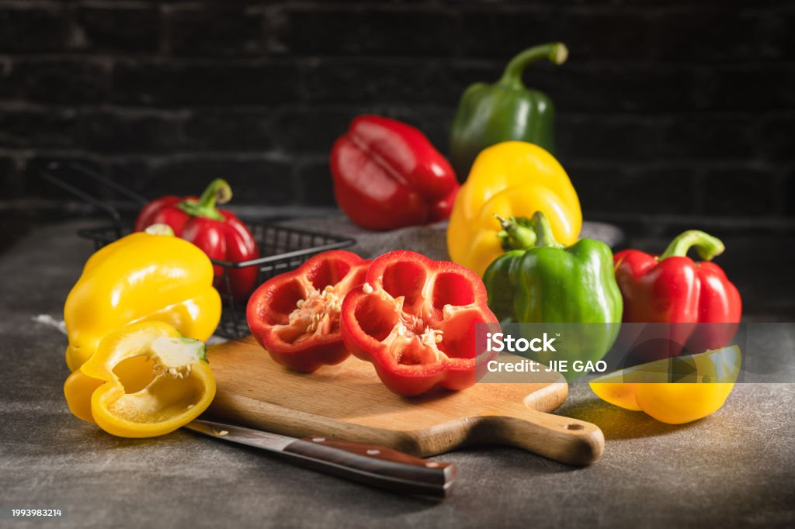

Chickpea Veggie Patties
About the Recipe
A flavorful spiced chickpea and potato filling is stuffed into flaky pastry and baked for these satisfying patties. Perfect as a meal or snack, this recipe was developed by registered dietitians (and best friends!) Ashley Carter and Jasmine Westbrooks, who founded EatWell Exchange, which won the 2021 WW Wellness Impact Award.
Ingredients
-
Uncooked russet potato
- ½ pound(s), peeled and cut into 1-inch pieces
-
Cooking spray
- 3 spray(s)
-
Canned chickpeas
- ¾ cup(s), rinsed
-
Uncooked carrot(s)
- ⅓ cup(s), chopped
-
Uncooked bell pepper(s)
- 1 item(s), small, chopped
-
Uncooked onion(s)
- 1 medium
-
Vegetable broth
- ¾ cup(s)
-
Garlic powder
- 2 tsp
-
Onion powder
- 2 tsp
-
Cayenne pepper
- ½ tsp
-
Ground allspice
- ¼ tsp
-
Table salt
- 1 tsp
-
Black pepper
- 1 tsp
-
Goya Discos para empanada dough
- 20 item(s)
-
Egg(s)
- 1 item(s), large
Potato

Chickpeas

Carrot

Bell Paper

Onion

Vegetable Broth

Garlic

Chili Paper
Ground Spice
Salt

Black Paper
Goya

Eggs
Preparation
-
Step 1
- Place the potatoes in a medium saucepan and add enough water to cover. Bring to a boil. Reduce to medium, cover and simmer for 10 minutes, until tender. Drain and mash the potatoes; set aside.
-
Step 2
- Coat the bottom of a large saucepan with cooking spray and heat over medium. Sauté the onions, bell peppers, and carrots until almost tender, about 5 to 6 minutes, stirring occasionally.
-
Step 3
- In a medium bowl, mash the chickpeas. Add the chickpeas and vegetable broth to the saucepan with vegetables. Cook for 10 minutes on medium heat.
-
Step 4
- Remove the chickpeas from the heat, and add the mashed potatoes, onion powder, garlic, cayenne, and allspice. Stir to combine. Let cool to room temperature.
-
Step 5
- Preheat the oven to 450 F. Line a large baking sheet with parchment.
-
Step 6
- In a small bowl, combine the egg with 1 tbsp water. Place 3 tbsp of filling in the center of 1 dough disk. Brush edges of dough with egg wash. Fold over and press with a fork to seal. Repeat with remaining filling and dough disks. Brush any remaining egg wash on top of patties. Bake until golden brown, about 20 minutes. Let cool, then serve.
Serving size: 1 patty